Лазанья
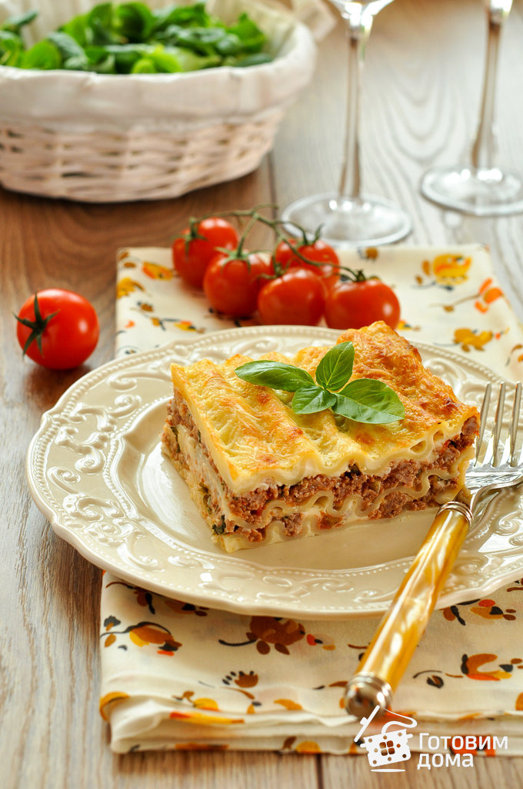Италия у многих ассоциируется с пиццей, пастой и ЛАЗАНЬЕЙ. И если пиццей теперь никого не удивишь, то лазанья еще не приобрела такую широкую известность, хотя она того заслуживает!
Теперь лазанью без проблем можно попробовать в любом кафе или ресторане. Но, мой вам совет - попробуйте приготовить лазанью в домашних условиях, и вы больше никогда не закажете ее в кафе, потому что дома лучше!
Да, готовить лазанью немного времязатратно, у вас уйдет пару часов на ее приготовление. Но я дам вам еще один совет, и если прислушаетесь будете просто счастливы (простите за нескромность, но я сама в восторге от этой идеи 😍)!
А маленький секрет заключается в том, что если уж вам все равно предстоит повозиться с приготовлением, то стОит приготовить большую порцию или даже две порции (ну про две, может я уж слишком разошлась 😄) Готовите много, сколько можете съесть - съедаете, а остальную лазанью делите на порции, упаковываете в пищевую пленку, пакеты, формочки - как вам удобно, и убираете в морозилку (естественно, лазанью предварительно следует хорошо остудить; кроме того, только в холодном виде ее удастся нарезать ровными красивыми кусочками, а в горячем или теплом виде вы ее красиво никогда не нарежете). А когда вы прибежали с работы и у вас совсем нет времени возиться с готовкой, на помощь вам придет замороженная лазанья! Просто освобождаете ее из упаковки и ставите в духовку минут на 30. Пока переодеваетесь, моете руки, накрываете на стол и зовете мужа и детей за стол (можете еще успеть салатик из свежих овощей настрогать), лазанья уже разогреется, вам останется только пожелать вашим близким приятного аппетита!
Еще практический совет для сокращения времени готовки: разделите приготовление на 2 дня. В первый день приготовьте соусы, остудите и уберите в холодильник. А на следующий день соберите и запеките лазанью. Вы все это сделаете между делом, а результат получится шикарнейший!!!
Ну и напоследок, если хотите приготовить лазанью для гостей, также заранее приготовьте составляющие для лазаньи, полностью соберите ее, посыпьте сыром, затяните пищевой пленкой и уберите в холодильник. Т.е. накануне, с вечера вы все подготовили. А на следующий день, вам останется только перенести лазанью из холодильника в духовку, накрывать на стол, ждать гостей и получать комплименты! 💕
P.S. Только помните, что лазанью трудно нарезать ровными кусочками в горячем виде. Просто примите это как факт, запаситесь ОСТРЫМ ножом и нарезайте ее с умным видом, не заморачиваясь с ровностью кусочков. Ведь главное в лазаньи - это ее изумительный домашний вкус!
ИНГРЕДИЕНТЫ
Размер формы: 20х20 см
- листы лазаньи (сухие): 6-10 шт
- сыр (типа Российского): 300 г
Для соуса «Болоньезе»
- фарш (говядина со свининой): 600-700 г
- 5-6 спелых помидоров или 400 г очищенных томатов в собственном соку
- белое или красное сухое вино: 100 мл
- лук репчатый: 2-3 шт
- чеснок: 2 зубчика
- масло сливочное: 1-2 ст.л.
- растительное масло: 4-5 ст.л.
- зелень петрушки или базилика
- соль
- свежемолотый перец
Для соуса
- молоко: 800-1000 мл
- сливочное масло: 80-100 г
- мука: 80-100 г
- орех мускатный: на кончике ножа
- соль
- свежемолотый перец
ОБЩАЯ ИНФОРМАЦИЯ
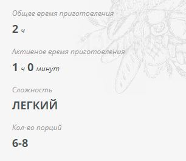Пошаговый рецепт с фото
-
Приготовить соус «Болоньезе».
Помидоры вымыть, со стороны плодоножки, сделать крестообразный надрез и опустить в кипяток на 2 минуты.
Переложить в ледяную воду, снять кожицу и измельчить помидоры в блендере.
Лук очистить и мелко нарезать.
Чеснок очистить и порубить.
Зелень вымыть и порубить.
В сотейнике или глубокой сковороде разогреть сливочное масло вместе с растительным, выложить лук, посолить, поперчить и обжарить до мягкости.
-
Добавить рубленый чеснок (1 зубчик) и обжарить 1 минуту.
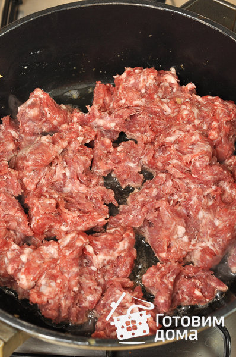
Переложить лук с чесноком из сковороды в миску, стараясь, чтобы как можно больше масла осталось в сковороде.
В сковороду выложить фарш. -
И обжарить на среднем огне, до готовности, разминая деревянной лопаткой, чтобы разбить крупные комки.

-
К фаршу добавить обжаренный лук и помидоры.

-
И перемешать

Влить вино и тушить, помешивая, 3 минуты.
Посолить, поперчить, убавить огонь до минимального, и тушить под крышкой 20-30 минут. -
Снять сотейник с соусом с огня, добавить рубленую зелень, оставшийся зубчик чеснока.
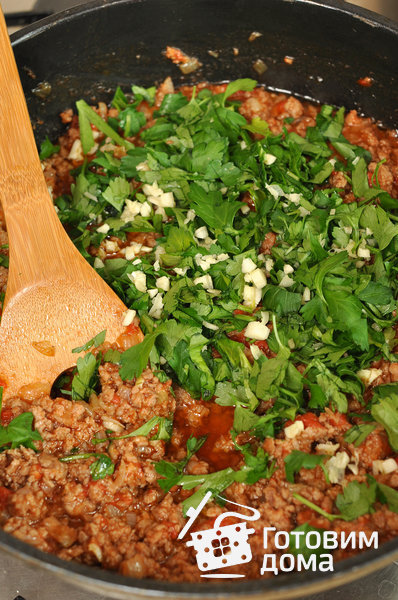 -
И перемешать.
Соус накрыть крышкой и отставить в сторону.
-
Приготовить соус «Бешамель».
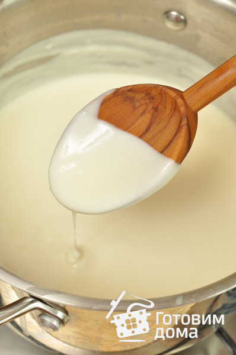 -
В большом количестве кипящей подсоленной воды отварить листы лазаньи около 2 минут (одновременно лучше отваривать не более 2 листов лазаньи).
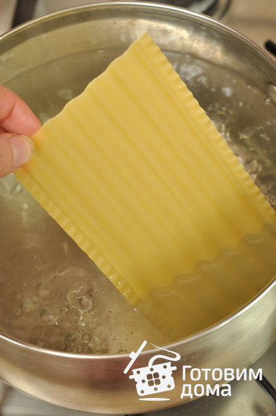 -
Отваренные листы переложить в миску с ледяной водой.
После того как листы остынут, обсушить их на полотенце от воды.
На дно формы для запекания выложить немного соуса «Бешамель».
-
Сверху на соус уложить листы лазаньи.

-
Затем выложить часть соуса «Болоньезе».
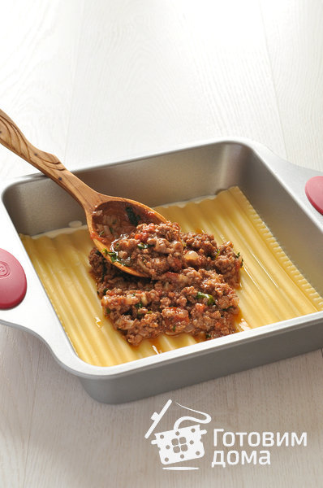 -
И равномерно распределить соус в форме.
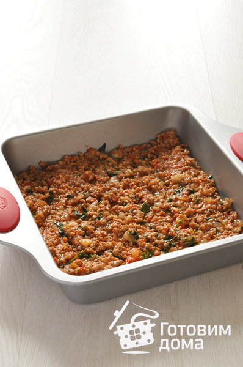 -
Сверху выложить часть соуса «Бешамель».
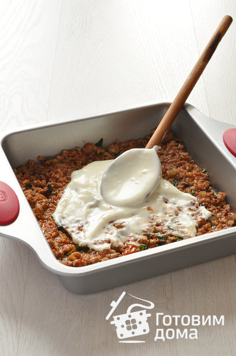 -
И также равномерно распределить соус в форме.
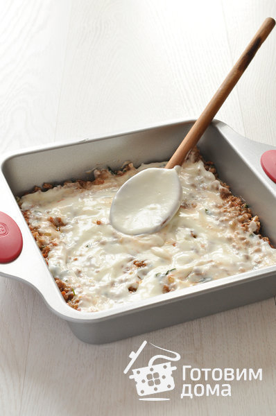 -
Уложить листы лазаньи.

-
Таким образом, чередовать слои, пока не будет заполнена форма.
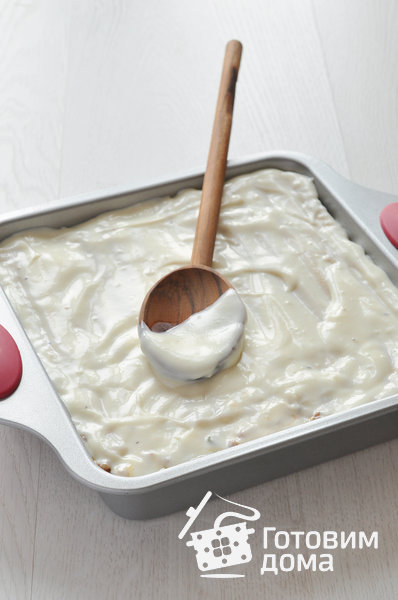
Последним слоем выложить листы лазаньи и покрыть соусом «Бешамель». -
И посыпать поверхность тертым сыром.

Запекать лазанью 40-60 минут при температуре 180°C, до золотистой корочки.
Готовую лазанью вынуть из духовки, дать постоять 10-15 минут, разрезать на порции и подавать.